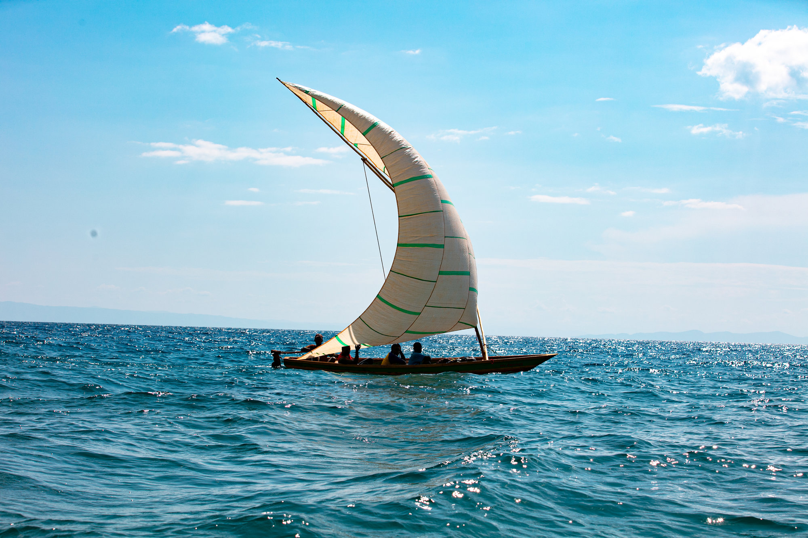

Trip Details
•
Departing from Kigoma
Gombe Chimpanzee & Lake Tanganyika Day Trip

Spend a day in the forest where chimpanzee research began.
Imagine this: you step off a boat onto a pebbled beach, the forested hills of Gombe rising straight up from the water, and within the hour you're sitting a few metres from a wild chimpanzee. That's what a day in Gombe feels like.
This is the forest Jane Goodall made famous. More than sixty years on, it's still one of the best places on earth to watch wild chimps going about their lives: grooming, squabbling, playing, raising babies. And you can do it all in a single day from Kigoma.
Itinerary
-
Morning: Across the lake
- Meet our team in Kigoma for a quick briefing, then climb aboard for the boat ride to Gombe. It's a lovely journey in itself. Lake Tanganyika is one of the oldest and deepest lakes in the world, and the shoreline slips by in green folds of forest and fishing villages.
-
Arrival: Meet your guide
- Once we land and the park formalities are done, you'll meet your park guide, who knows these trails and these chimps well. You'll hear how Gombe's research started and why it still matters, before heading in.Early breakfast, then set off with your ranger and guide into the forest.
-
Into the forest
- This is the part you came for. Your guide leads you along forest trails, spotting signs of life: fresh fruit on the ground, distant calls, movement in the canopy. Chimps roam freely, so every trek is different. When you find them, you'll spend time watching in line with park rules, and it's usually the moment people remember longest.
-
Lunch by the lake
- After the trek, we break for lunch, with snacks, bottled water and soft drinks on hand. Kick off your boots and enjoy one of the most beautiful lunch spots in Tanzania.
-
A little more time to wander
- If time allows, you can stay on to take photos, enjoy the shoreline and soak up the quiet before heading back.
-
Home across the water
- The boat takes you back to Kigoma, tired, happy and probably already planning how to describe the day to your friends.
Included
- check_boxReturn boat transfers between Kigoma and Gombe
- check_boxGombe Stream National Park entrance fees
- check_boxPark guide fees
- check_boxGuided chimpanzee trek
- check_boxLunch
- check_boxSnacks, bottled water and soft drinks
- check_boxSupport from the Western Discovery Safaris team throughout
Not included
- cancelTravel to and from Kigoma (flights, buses or other transport)
- cancelAccommodation in Kigoma before or after your trip
- cancelTanzania visa fees
- cancelTravel and medical insurance
- cancelDinner and any meals outside the day trip
- cancelAlcoholic drinks and any extra drinks or snacks beyond those provided
- cancelTips for your guide and boat crew (always appreciated, never required)
- cancelPersonal items and souvenirs
Other trips
3-Day Gombe Chimpanzee Trek
3 days · $888 USD per person
4-Day Gombe Chimpanzees & Kigoma Culture
4 days · $1,500 USD per person
Gombe Field Discovery
3 days, 2 nights, up to 8 guests · $2,950 USD per person
University Field School
7 days, 6 nights, up to 14 guests · $3,950 USD per person
Gombe Field Expedition
10 days, 9 nights, up to 12 guests · $4,950 USD per person
Experts Signature Expedition
10 days, 9 nights, up to 10 guests · $5,500 USD per person